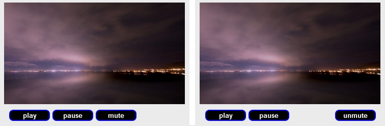

One of the primary drivers of the EPUB 3 revision was the publishing community’s desire to natively include audio and video content in publications, a key ingredient in breaking EPUB out of the static confines of the printed page. In our ever-growing world of tablet computers, it’s simply not feasible or realistic to expect content creators to make do with the artificial print compromise of two-dimensional images where video works better, or to include text transcripts and quotes in place of audio. By adopting HTML5, the uncertainty of plug-in support that has held back multimedia publications is now a thing of the past.
With the requirement to print becoming less of a roadblock for many genres, and going ebook-only is no longer equated with publishing suicide, the growth in fully integrated multimedia books can only continue from here on. Why limit readers to text instructions in science, technology, engineering, and mathematics (STEM) materials when you can also embed a video illustrating exactly how to carry out a procedure or experiment? Why paint in words alone the impact of a powerful piece of music when you can embed a recording for the reader? While the plain-Jane novel will undoubtedly continue on in its current form, publishing can now be much richer and deeper than text-and-headings novels.
In keeping with the nature of this guide, this chapter won’t cover the endless ways you might integrate audio and video content into a work. Instead, it will demonstrate the issues of including content as they pertain to EPUB production. You also won’t be subjected to a long-winded history of audio and video on the Web, because it’s a dry and boring subject. Suffice it to say, all you really need to know is that multimedia was not initially a part of the HTML specification, and that largely accounts for the world of proprietary plug-ins that we’ve all come to know and loathe over the years.
From the early hypermedia void emerged the various formats, frameworks, and players that enabled the inclusion of audio and video content in browsers, many still with us today (RealMedia, QuickTime, Windows Media, Flash, etc.). The resulting haphazard approach to multimedia has been a bane of interoperability for the Web ever since, as browsers often require multiple players in order to be able to render the variety of media types found out in the wild. And that’s the short story of why you’re ever and always installing and updating plug-ins for your browser.
If you take this situation and apply it to ebooks, it’s not hard to see why multimedia integration has lagged the ebook revolution, aside from just the lack of rendering on eInk devices. In EPUB, interoperability and reliability of rendering are key requirements for technological inclusion in the specification, and expecting readers to find and install plug-ins in an ebook environment is problematic, because even if the reader has an Internet connection and can find the required player, installing it for a browser on the device isn’t necessarily the same as installing it for an ebook reading system running on the device (e.g., the reading system might not recognize plug-ins on the system, might ignore the content regardless of what plug-ins are installed, etc.).
But none of this pain is to suggest that adding audio and video was not possible before the new revision. You could technically embed multimedia in any EPUB 2 publication using the object element (with a fallback), but the odds of that content successfully playing weren’t great. Support simply wasn’t part of the specification, and unless the reading system provided plug-in support (as Adobe Digital Editions did for Flash video) or added support for the new multimedia elements despite the specification (Apple iBooks and Barnes & Noble’s NOOK Color) readers would see only the fallback prose or image. EPUB 2s with rich content were not common, as a result.
EPUB 3 changes all that, with one caveat…
If this book were only about HTML5, and we were following a typical pedagogical learning curve, this chapter would probably begin by looking at the new audio and video elements and how to use them. And we’ll get to that. Unfortunately, much of the discussion in this chapter is going to be colored by a big nuisance in HTML5 (the lack of support for a common video codec), so that’s where we’ll instead have to start (and learning curves are just a bore, anyway).
EPUB 3 requires support for both MP3 and AAC-LC (MP4) audio, so the issues with video in this chapter are not cross-cutting.
The problem of a lack of a common video codec gets magnified when ported to EPUB because it breaks one of the core features of the format: the predictability of rendering. EPUBs are not just websites in a box, as you’ve already seen, even if that’s the easy way to think about them. EPUB is more like a subsetting of HTML, because you don’t often have the full power of the Web at your fingertips while reading an ebook.
The subsetting can feel like a nuisance if you’re used to the freedom of the Web, but it ensures that reading systems are able to render all content without the reader having to install anything, which, as already noted, is often not possible. And that’s where the problem of a lack of common video support starts to bring us full circle to the problem of plug-in support. It’s not quite as problematic, as you’ll see, but it has the potential to make your content just as unrenderable.
But to jump back to the revision, agreement on support for a single video codec was the one fly in the ointment of complete interoperability (dreaming of a DRM-free world, of course). After a number of attempts to find consensus, the end result was a kind of stalemate between support for H.264 and VP8, without consensus on being able to support both (similar to what happened with support on the broader Web, but there initially between H.264 and Ogg Theora and then later WebM). The practical outcome of this stalemate, as with HTML5, is that producers are free to embed any video container/codec combination they please, and reading system developers can choose to support any combination they please, including none at all.
More practically, the video options are going to be limited. In the interests of interoperability, the IDPF strongly urges developers and content creators to use one or both of the VP8 and H.264 codecs, and those two are the mostly likely ones to find support in reading systems based on the discussions that took place in the working group. In other words, there may be no de jure standard, but deviate from the de facto one at your own risk.
One sticking point with H.264, not just in EPUB, is whether it is royalty free or not. Although declared royalty free for free Internet video use by the licensing organization (MPEG-LA) in 2010, that condition wouldn’t apply to the sale of retail EPUBs. An excellent discussion of the issues around H.264 is available here.
But “limited” options don’t rule out the very real problem that you’re likely going to have to duplicate all your video content in order to ensure your EPUB will render for all readers, and even then there is no guarantee of playback if a reading system supports only another option like Ogg Theora. That begs the question: what can you do to minimize the impact?
The first piece of advice is to consider the distribution channel you put your EPUBs into, and what format(s) the devices that connect to it are likely to support. If you’re publishing to Apple’s iBookstore, for example, you’re required to use the H.264 codec to encode video in the M4V file format. Since only Apple devices with the ability to decrypt Apple’s DRM will be able to access the publication, there’d be no point including alternate formats.
The BISG EPUB 3 support grid can help in determining which devices support which formats as more information becomes available.
But you’ll only avoid transcoding your videos if you plan to distribute your EPUB through a single vendor, or can find a common format across the ones you use. That’s rarely a realistic option. Targeting devices also descends video into the same sphere as DRM and walled gardens, where content can’t travel from one device to another. Throw in the browser as cloud reading system, and things get even murkier.
A better alternative is to provide the option to the reading system to pick the format it supports. It doesn’t necessarily introduce barriers to distribution, like doubling the size of your EPUB file, but isn’t an instant panacea, either.
But it’s time to switch gears at this point, and look at the media elements themselves to see how this can be done. We’ll pick back up on the problem of video as we encounter potential options exposed through the markup.
The codec debate in EPUB 3 is not closed, but has been deferred until consensus can be achieved. Any future update of the specification could see support for one or more codecs codified, at which point all discussion in this chapter about content duplication would be happily made moot.
The new HTML5 audio and video elements probably won’t seem all that awe inspiring as we look them over, at least from a markup perspective, but they really do represent a huge step forward in terms of cross-compatibility of content (the video codec issue aside). Plug-ins were not just a pain because they had to be installed, but also because they run in a distinct space allocated by the reading system. While many people never notice or care about this distinction, users of assistive technologies are only too aware of the black boxes these plug-in spaces represent, as the players running in them offer wildly varied accessibility support and often come with surprise keyboard traps.
HTML5 does away with this problem by bringing the rendering back into the reading system, enabling it to control playback without launching a plug-in application. And that also means that content creators can now control playback, too; it’s possible to create your own media players using HTML elements and JavaScript. EPUB 3 even allows you to create script-free players, as you’ll see at the end of this chapter. This change also makes it possible for assistive technologies to more reliably interact with media content, as even custom controls can now be made accessible via the document object model (DOM).
There are two methods to identify the audio or video resource to load. The first is to add a src attribute to the appropriate element:
<audiosrc="audio/clip01.mp3"/><videosrc="video/clip01.webm"/>
This attribute either contains a relative reference to an audio or video clip in the EPUB container, as in the preceding example, or it can reference resources outside the container. Yes, you have been hearing right if you’ve noticed the various hints in this book about audio and video content being located inside or outside the container. Unlike EPUB 2, where all your resources had to be bundled into the container file, EPUB 3 makes a special exception for audio and video. The potential size issue in distributing this content, especially when it might have to be duplicated in more than one format, was the primary motivator, as you might imagine. But allowing content outside the container also leads to a host of other issues (pardon the pun), which we’ll deal with as we go.
Not surprisingly, then, you can tweak the previous example to indicate that a video resource has to be retrieved from the Web as follows:
<videosrc="http://www.example.com/video/clip01.webm"/>
But note when referencing external resources in a content document that you need to identify as much in the package document manifest. This is done by adding the remote-resources property to the entry for the containing file. The entry for the content document containing this clip might be marked up like this:
<itemid="c01"src="chapter01.xhtml"media-type="application/xhtml+xml"properties="remote-resources"/>
Also be aware that even though the video resource is not in the EPUB container, you still need to include a manifest entry for it:
<itemid="vid01"src="http://www.example.com/video/clip01.webm"media-type="video/webm"/>
The manifest lists all content items that are used in the direct rendering of the publication, so even though audio and video may live remotely, entries for them are still required.
Returning to the src attribute, one of its prime limitations is that it can only be used to specify a single audio or video resource. As just discussed about the need to include at least two possible video formats to minimize playback issues, this attribute probably isn’t going to be a reliable fit for anything but audio content, or targeted distribution.
So how do you handle video? The HTML5 working group mitigated the problem of variable codec support by allowing one or more source elements as the children of the audio and video elements. Identical to the src attribute just mentioned, each of these source elements includes its own src attribute defining the location of a potential resource.
You could now account for varying reading system support for video by providing both WebM and M4V video options as follows:
<video><sourcesrc="video/v001.webm"/><sourcesrc="video/v001.m4v"/></video>
The reading system can now step through each of the source elements until it finds a format it can play back for the reader.
The source element is an alternative to using the src attribute on the audio or video element; you cannot use the src attribute and the source elements together. Doing so will also cause your EPUB to fail a validation check, because a reading system will ignore the child source elements in such cases, even if it cannot play the resource referenced on the parent element.
Although this tagging represents a working solution for the multiple codec issue, at least in terms of providing potential options, it’s still not a very efficient one. When provided only the src attribute, the reading system will have to inspect the resource defined in each source tag to determine if the referenced audio or video can be played.
A src attribute on the audio or video element provides the same limited information, but when there is only one format, either the reading system can play it as it attempts to load it or it can’t, so there isn’t the same potential for wasted time checking for playback compatibility.
To speed up the identification of supported formats (or rapid elimination of unsupported formats, depending on your world view) you can add the appropriate media type to each source element in a type attribute. If you haven’t come across media types before, they are a standardized way of identifying file formats over the Internet, consisting of the general resource family followed by a unique subtype (e.g., application/javascript, audio/mp3, text/css).
By adding the media type to each source element, the reading system no longer has to inspect the referenced resources as it steps through the list; it can determine playback compatibility by matching the media type against the known types it can play. It may also mean that every person reading your EPUB isn’t querying your servers every time a document with multimedia resources in it is loaded, if you remotely host your content.
You can add the media types to each source tag in the previous example as follows:
<video><sourcesrc="video/v001.webm"type="video/webm"/><sourcesrc="video/v001.m4v"type="video/x-m4v"/></video>
One caveat here is to make sure you don’t incorrectly enter the media type when adding this attribute. When you specify the value, the reading system will take your word (the type value) over inspecting the resource. If you enter the wrong media type value, a reading system that could play the clip will assume that it can’t and continue checking the other source elements for a format it does support. A validator like epubcheck won’t report an issue either, because it has no way of knowing whether the type is invalid or some new format.
In most cases, the src and type attributes are all you need to provide the reading system to minimize any potential playback lag and unnecessary querying, but there is one more bit of information you can add to improve the compatibility discovery process: the codecs used. If you specify only the media type, you’re providing information only about the audio or video container, not about how the information contained in it is encoded.
For the benefit of those who aren’t familiar with video containers, it wouldn’t hurt to stop for a quick bit of background here. You can think of a video container in much the same way as an EPUB container, as packaging the resources needed for proper playback. Containers can include video and/or audio tracks, and sometimes also subtitle tracks. A video isn’t just one big data mash-up, in other words, but separate streams of information bundled together.
The flexibility of these containers isn’t restricted to just the type and number of streams that can be included, but it also extends to the codecs that can be used to encode the information in those streams. Some containers may strictly regulate the codecs that can be used, but others are general purpose in nature. The more flexible the container format, the less sure the reading system will be that it can play the format based only on the container identified in the media type.
So why does this matter to you? In many cases it doesn’t (WebM and M4V are predictable without the extra codec information), but if you want to write code to alter what gets displayed if the video cannot be rendered, for example, you need to be as precise as possible. The more general the information you provide when using general-purpose containers, the more likely the reading system is to say “maybe” when asked if the video will play (the JavaScript canPlayType function, which is used to test for compatibility, literally returns “maybe” in response).
For example, instead of just indicating that you’re using an MP4 container:
<sourcesrc="video/v001.mp4"type="video/mp4"/>
you could add a list of the specific codecs used for the audio and video tracks by adding the codecs parameter to the type attribute like this:
<sourcesrc="video/v001.mp4"type='video/mp4; codecs="avc1.42E01E, mp4a.40.2"'/>
The attribute now relays to the reading system that the video is encoded using the H.264 baseline codec and there is also an audio track encoded using AAC-LC (one of the EPUB-supported audio formats).
You’ll notice that the quoting on the type attribute was flipped in the previous example so that double quotes surround the embedded codecs parameter. Although it doesn’t normally matter which characters you use to quote attribute values in HTML, the inner codecs parameter must always use double quotes, so this is one case where you can’t just use your own preference.
Of course, few people actually memorize these codec strings, so don’t worry if they seem impossibly dense or you don’t even know how you go about figuring out what to input. The source element definition in the HTML5 specification lists many of the most common types for easy cut and paste, so you don’t have to know what avc1.42E01E actually means, as long as you generally know what format you used to encode your audio and video.
For space-saving reasons, the examples in the rest of this chapter will omit the codecs parameter.
When looking at the source media content and ways to duplicate it, a closely linked corollary discussion is how to handle the inevitable size issue. If you publish your content through one of the major retailers, you’re going to run into caps on the size of the content you can distribute. Apple’s iBooks, for example, has a 2 GB limit with a recommendation to strive for much smaller sizes because of space and playback issues (200 MB being noted in their guidelines). Barnes & Noble has a cap at 600 MB (smaller for PubIt! publishers).
As you’ve already seen, one content strategy the EPUB working group made allowances for in the specification was to enable audio and video resources to live outside the container. If you are targeting a specific distribution channel and brand of reading system, but know that your content could be rendered on others, you could embed the more common video format and remotely host the version that’s less likely to be needed by readers:
<video><sourcesrc="video/v001.webm"type="video/webm"type="video/webm"/><sourcesrc="http://www.example.com/video/v001.m4v"type="video/x-m4v"/></video>
Hosting the resources on a remote server comes with its own unique issues, though. It might get you in the online bookstore, and the reader won’t have the initial wait for their download of your EPUB to complete, but inevitably that content has to make it to their system.
Another negative of web hosting is that it may lead to repeated downloads for the same resource by the same reader, depending on how often the local cache on the reading system is cleared or how many devices they read on. You also need to consider the persistence of the links you include in your EPUBs, because once your ebook is released those links will become permanent to the buyer of the ebook. Security of your hosted content is always a consideration, too.
The point here is not to scare you off remote hosting, only to highlight that the decision to go that route needs to be more than just about how to minimize size. Developing a comprehensive content management strategy as part of any decision to remotely host content is highly recommended, because it will get you into thinking about how to mitigate these issues and avoid discovering pitfalls only after you’ve begun distributing.
Remote hosting isn’t the only solution to the size issue, of course. Your choice in audio/video format and codec use will also affect the size of your final EPUB. Some distribution channels don’t offer flexibility, at least for video, but encoding your audio to AAC-LC (MP4) typically results in smaller file sizes than equivalent encoding in MP3, for example. As we’re in the business of creating ebooks first and foremost, whether you need to use the highest quality resolutions and bitrates in your audio and video content is another question you need to consider. Is the reader really going to notice or be upset if they don’t have perfect audio and video clarity?
The ability of the human ear to distinguish differences in quality diminishes the higher quality the sound becomes. The average listener can easily tell the difference between human narration encoded at 32 kbps and 128 kbps, but not so much between 64 kbps and 128 kbps. Music sounds good at 128kbps to the lay audiophile, but generally only trained ears that know the distortions to listen for can tell the difference when compared to 256 kbps or 320 kbps.
This isn’t to suggest that you should strive for the least quality content you can get by with, but when it comes to distribution, sometimes compromises that aren’t going to radically alter the reader’s enjoyment of the work have to be made. Compromise might even be necessary to effectively deliver the content to the device. Providing the reader with choice of quality is not a bad idea, in other words.
So how can you offer different quality audio and video formats depending on the reader’s device and/or connection speed?
The answer, unfortunately, is that there are no native methods available. When a reading system steps through the source elements, it cannot tell what resolution and/or bitrate were used, and even if it could, which one to render is not a decision the reader necessarily wants the device to make for them. As soon as the reading system finds a source that can be played back, it will typically use that source. Since there is no container or codec difference, only you as the content creator know which is “high” quality and which is “low.”
You can still offer the reader the option of high- or low-quality audio or video (and levels in between), but it requires scripted solutions. The following example shows a simple set of controls that flip the source depending on what quality the reader has selected:
<script>functionswitchQuality(q){varsrc=newArray();src.low='http://www.example.com/video/clip01-lowres.mp4';src.hi='http://www.example.com/video/clip01-hires.mp4';varvid=document.getElementById('video1');varlow_btn=document.getElementById('lowres');varhi_btn=document.getElementById('hires');if(q=='low'){low_btn.setAttribute('hidden','hidden');hi_btn.removeAttribute('hidden');vid.src=src.low;}else{hi_btn.setAttribute('hidden','hidden');low_btn.removeAttribute('hidden');vid.src=src.hi;}vid.load();vid.play();}</script><videoid="video1"src="http://www.example.com/video/clip01-hires.mp4"/><pid="video1-lowres"class="small">Switchto<buttonid="lowres"onclick="switchQuality('low')">LowerQuality</a><buttonid="hires"onclick="switchQuality('hi')"hidden="hidden">HigherQuality</a></p>
If the default high-quality video is too slow, or even if the reader just wants to minimize their potential wireless bill, they can switch to the lower quality version before any playback begins. You could make this example more sophisticated, so that if the reader switches mode mid-video they aren’t forced back to the beginning, but that’s left as another exercise for the reader.
One issue that wasn’t covered in the discussion of remote hosting of resources was preloading the data for the user. The EPUB 3 package document has mechanisms in place to allow reading systems to determine which media resources are outside the container (the remote-resources property), and potentially download and cache them, but there is an implicit assumption there that all the resources are necessary and will be rendered in full by every reader. The reality is that reading systems don’t currently prefetch remote content as soon as a book is opened, and readers run a spectrum from those who won’t stop reading to watch or listen to a media resource to those who will watch every second of every clip.
As the content creator, though, you’ll often have a reasonable idea of how likely someone is to consume your content. If a video clip is integral to following the narrative, and in the primary narrative flow, chances are good that someone is going to watch it, at least the first time they read through the section. If the resource is part of a sidebar, the number of viewers will drop, as many readers skip supplementary information.
The more likely the reader is to consume the content, the more helpful it is to have that content ready for them as soon as they want to begin playback. Unfortunately, you can’t really control what a reading system will do, but HTML5 does allow you to give the reading system a hint as to what you would like it to do through the preload attribute.
This attribute takes any of the following values:
none
metadata
auto
Knowing that few people are going to be interested in watching our video of paint swatches drying, for example, you could set the none value to request that no data be grabbed in advance:
<videoprefetch="none"><sourcesrc="paintDrying.webm"type="video/webm"/></video>
In keeping with the freedom of the reading system to do what it pleases, there is no default value when the attribute is not specified, and the reading system can ignore whatever you do specify.
It’s worth noting at this point that even though EPUB has required audio formats, there’s nothing preventing you from using specialized formats if they better fit your needs (e.g., better compression/quality). The only requirement is that a fallback in either MP3 or MP4 be provided. For example, you could use multiple source elements to designate a preferred format you’ve included in the container (Speex), with a fallback (MP3) on a remote server as follows:
<audio><sourcesrc="audio/clip001.spx"type="audio/x-speex"/><sourcesrc="http://www.example.com/audio/clip001.mp3"type="audio/mp3"/></audio>
This kind of fallback approach would work well in controlled environments where you can predict that the majority, or preferably all, of your readers will be using reading systems that support your nonstandard content. Otherwise, it could backfire on you if all readers request the MP3s on your server.
Having finally exhausted all there is to say about audio and video sources, the next piece of functionality exposed by the audio and video elements is control over playback. Sometimes surprising when first encountering these elements, the reader is not provided any means of controlling playback by default. You, as the content creator, are required to provide playback functionality, whether by skinning your own player or by enabling the default reading system controls.
Fortunately, enabling the native controls is as simple as including a controls attribute on each multimedia element:
<audio...controls="controls"/><video...controls="controls"/>
It’s still a bit odd that by default readers are provided no means to control playback, but as the native controls aren’t the most glamorous, the HTML5 working group undoubtedly expected more people would skin their own players.
Using video as an example, Figure 5-1 shows the three possible scenarios readers may encounter: video without any controls, video with native controls enabled, and custom controls below the video.
The rendering is similar for audio, but unless you specify the controls attribute on the audio element, or include your own controls, the user won’t see anything at the point where the audio is embedded (e.g., background music). If you take away the video display area, you essentially have the default audio controls, as shown in Figure 5-2.
You should always plan for the least functionality in a reading system and enable the native controls by default. Even if you skin your own player, there is no guarantee that a reading system will support JavaScript, leaving the reader with no way to activate the media (you’ll see a feature EPUB 3 introduces to also work around this problem later). The HTML5 specification does state that “if scripting is disabled for the media element, then the user agent should expose a user interface to the user,” but no known reading systems do so at this time, and the wording does not make it a requirement for them to do so in the future.
Outside of some really specialized uses of video (such as embedding in canvas), there are few pressing reasons against giving the reader any control; most are just aesthetic. One example might be automatically playing a video as a transition between chapters or parts in a novel and not wanting the video to appear overlaid with controls.
You can initiate the playback part by adding the autoplay attribute:
<video...autoplay="autoplay">
When playback is automatically started in this way, the controls, if visible, will immediately fade out from view, so any aesthetic displeasure they cause is fleeting. A better solution than not providing playback control would be to add a few seconds delay at the start of the video so that the controls are gone by the time the actual content begins. Most readers will hardly notice the presence of the controls, because cognitively it will take a moment to process the new page anyway, and a delayed start will give the reader time to orient themselves to what is about to happen (loading a page and having a video immediately begin is startling even if you know it’s coming).
Also remember that EPUB is reflowable content, and you can’t control the “page” size, before jumping too quickly on autoplay bandwagon. Audio and video content that is set to autoplay will normally be initiated as soon as the first page of content is rendered, not when the element first becomes visible in the viewport. If you automatically start a clip that ends up even a page or two deep, for example, imagine the confusion when the reader gets startled by a ghostly, detached audio track as the first page loads with no audio or video player on it.
Even the trend to features as seemingly innocuous as background mood music to augment the reading experience are a bad idea without some means of disabling the sound. This kind of background audio can impact on the accessibility of your content, because someone using a reading system’s built-in text-to-speech rendering might be forced to struggle through the overlapping audio. Lacking controls, only the reading system volume will be available, and it will move both tracks higher and lower in sync.
But why make any assumptions? Instead of placing readers in a position where they have to work around your design choices, the simpler route is to always enable the controls and then selectively disable them when scripting is available, by none other than scripted methods! If your own scripted controls will work in the reading system, remove the native controls in your code with a few lines of JavaScript (using jQuery to simplify iterating over both audio and video elements):
<script>$(document).ready(function(){$('audio, video').each(function(){this.removeAttribute("controls");});});</script>
This kind of progressive enhancement of audio and video content will leave all readers happy, regardless of whether the experience is exactly how you wanted it to be or not.
The poster attribute is used with the video element to control the initial image displayed to the reader before video playback begins. In the past, what would be displayed when video content was initialized was up to the plug-in, but was often either a black screen or the first frame of the video. Rarely the most appealing use of the real estate.
With the poster attribute, you get to specify the image you want shown. If we were writing a movie themed book, for example, we could indicate that we want an image of curtains to show by default as follows:
<videowidth="320"height="180"controls="controls"poster="img/curtains.png">
When the reader first encounters the video, it will now show the custom image shown in Figure 5-3.
Poster images must be included in the EPUB container, even if the associated video resource is remotely hosted (the exception applies only to the audio and video resources themselves). On the bright side, you never have to worry about whether the image will render or not like you do with the video content itself. Even if your content cannot be played back, the poster image will still be rendered. You’ll see why this is useful soon.
Always setting the height and width of your video content should be a given. Reading systems will attempt to determine the dimensions from the video metadata, but this circles back to the problem of remotely hosting content and the reader not having an active Internet connection. If you haven’t specified any dimensions, and the resource isn’t available, the reading system will next check if you’ve specified a poster image and use its dimensions. As a last resort, it will default to rendering a 300 px by 150 px viewing area.
You can either set the height and width attributes on the element:
<videoid="vid01"...width="640"height="360">
or via CSS:
<styletype="text/css">video#vid01{width:640px;height:360px;max-width:100%;}</style>
Setting the max-width property to 100%, as in this example, is also recommended to ensure that your video properly scales down to the available viewing area.
The audio element does not include these attributes, since audio has no visible size. You cannot change the size and space that the default audio controls occupy.
And for completeness, here’s a quick recap of the media-specific attributes that aren’t critical enough to warrant their own discussion:
crossorigin
anonymous or use-credentials) to use for cross-origin resource sharing (CORS). Setting CORS allows a video clip to be embedded in a canvas without tainting the canvas, for example. It is not necessary to set this attribute just because the audio or video resource is hosted remotely, even though all remote resources are on a different domain from the EPUB. For more information, see the W3C Cross-Origin Resource Sharing specification.
loop
mediagroup
audio or video clips to be controlled by a common set of controls (e.g., to provide sign-language transcription beside an audio or video clip).
muted
audio is muted by default.
Built-in playback and playback control are not the end of the advances that the new audio and video elements bring to EPUB 3. Both elements also now allow timed text tracks to be embedded using the HTML5 track element.
If you’re wondering what timed text tracks are, you’re probably more familiar with their practical names, such as captions, subtitles, and descriptions. A timed track provides instructions on how to synchronize text (or its rendering) with an audio or video resource: to overlay text as a video plays, to include synthesized voice descriptions, to provide signed descriptions, to allow navigation within the resource, etc., as shown in Figure 5-4.
Don’t underestimate the usefulness of subtitles and captions; they are not a niche accessibility need. There are many cases where a reader would prefer not to be bothered with the noise while reading, are reading in an environment where it would bother others to enable sound, or are unable to hear clearly or accurately what is going on because of background noise (e.g., on a subway, bus, or airplane). The irritation they will feel at having to return to the video later when they are in a more amenable environment pales next to someone who is not provided any access to that information.
It probably bears repeating at this point, too, that subtitles and captions are not the same thing, and both have important uses that necessitate their inclusion. Subtitles provide the dialogue being spoken, whether in the same language as in the video or translated, and there’s typically an assumption the reader is aware which person is speaking. Captions, however, are descriptive and provide ambient and other context useful for someone who can’t hear what else might be going on in the video in addition to the dialogue (which typically will shift location on the screen to reflect the person speaking).
There are currently two competing technologies for writing timed tracks: Timed Text Markup Language (TTML) and Web Video Text Tracks (WebVTT). TTML is an XML-based language that provides a greater range of features than WebVTT. WebVTT, on the other hand, is text-based and often simpler to create for the average web content producer:
<--! TTML: --><ttxml:lang="en"xmlns="http://www.w3.org/ns/ttml"><bodyregion="subtitleArea"><div><pxml:id="sub001"begin="4.50s"end="11.50s">The EPUB 3 specification is young. It was less than 2 months ago now, that the IDPF</p></div>...</body></tt><--! WEBVTT: --> WEBVTT 1 00:04.500 --> 00:11.500 The EPUB 3 specification is young. It was less than 2 months ago now, that the IDPF ...
A typical aside at this point would be to detail how to create these tracks in a little more detail, but plenty of tutorials abound on the Web, in addition to the specifications themselves. Because the technologies are not unique to EPUB, we’ll not go down the road of analyzing both formats. Understanding a bit of the technology is not a bad thing, but similar to writing effective descriptions for images, the bigger issue is having the experience and knowledge about the target audience to create meaningful and useful captions and descriptions.
The issues involved in creating effective captions are also beyond what could be reasonably handled in this book. From the fonts you choose, to maintaining contrast, to potentially editing dialogue to deal with the fact that most people can’t read as fast as the persons on the screen can talk, there are many issues involved in captioning and not a lot of authoritative references for the lay person. If you don’t have the expertise, engage those who do. Transcription costs are probably much lower than you’d expect, especially considering the small amounts of video and audio most ebooks will likely include.
For a recap of captioning issues, see Olivier Nourry’s presentation slides for “Making Videos More Accessible to the Deaf and Hard of Hearing.”
Instead, it’s time to learn how these tracks can be attached to your audio or video content using the track element. The following example shows a subtitle and caption track being added to a video:
<videowidth="320"height="180"controls="controls"><sourcesrc="video/v001.webm"/><trackkind="subtitles"src="video/captions/en/v001.vtt"srclang="en"label="English"/><trackkind="captions"src="video/captions/en/v001.cc.vtt"srclang="en"label="English"/></video>
The first three attributes on the track element provide information about the relation to the referenced video resource: the kind attribute indicates the nature of the timed track you’re attaching, the src attribute provides the location of the timed track in the EPUB container, and the srclang attribute indicates the language of that track.
The label attribute is different, because it provides the text to render when presenting the options the reader can select from. The value, as you might expect, is that you aren’t limited to a single version of any one type of track so long as each has a unique label. You could expand the previous example to include translated French subtitles as follows:
<videowidth="320"height="180"controls="controls"><sourcesrc="video/v001.webm"type="video/webm"/><trackkind="subtitles"src="video/captions/en/v001.vtt"srclang="en"label="English"/><trackkind="captions"src="video/captions/en/v001.cc.vtt"srclang="en"label="English"/><trackkind="subtitles"src="video/captions/fr/v001.vtt"srclang="fr"label="Fran&#xE7;ais"/></video>
This example uses the language name for the label only to highlight one of the prime deficiencies of the track element for accessibility purposes. Different disabilities have different needs, and how you caption a video for someone who is deaf is not necessarily how you might caption it for someone with cognitive disabilities, for example.
The weak semantics of the label attribute are unfortunately all that is available to convey the target audience. The HTML5 specification, for example, currently includes the following track for captions (fixed to be XHTML compliant):
<trackkind="captions"src="brave.en.hoh.vtt"srclang="en"label="English for the Hard of Hearing"/>
You can match the kind of track and language to a reader’s preferences, but you can’t make finer distinctions about who is the intended audience without reading the label. Not only have machines not mastered the art of reading, but native speakers find many ways to say the same thing, scuttling heuristic tests.
The result is that reading systems are going to be limited in terms of being able to automatically enable the appropriate captioning for any given user. In reality, getting one caption track would be a huge step forward compared to the Web, but it takes away a tool from those who do target these reader groups and introduces a frustration for the readers in that they have to turn on the proper captioning for each video.
You’ve seen the difference between subtitles and captions earlier, but the kind attribute can additionally take the following two values of note:
descriptions
chapters
Being able to add more than one version of the same “kind” of track brings us to a last attribute for the track element: default. If you were to provide captions for more than one audience, for example, you could specify one to render by default when the reader has no preferences that could match a more precise version. Using the earlier example with multiple subtitles in different languages, you could specify that English should render by default by adding this attribute to the track tag:
<videowidth="320"height="180"controls="controls"><sourcesrc="video/v001.webm"type="video/webm"/><trackkind="subtitles"src="video/captions/en/v001.vtt"srclang="en"label="English"default="default"/><trackkind="subtitles"src="video/captions/fr/v001.vtt"srclang="fr"label="Fran&#xE7;ais"/></video>
But the downside of the track element that hasn’t yet been mentioned is that it remains unsupported in browser cores at the time of this writing (at least natively), which means EPUB readers also may not support tracks right away. There are some JavaScript libraries that claim to be able to provide support now (colloquially called polyfills, as they fill the cracks), but that assumes the reader has a JavaScript-enabled reading system.
Although support will develop in time, if waiting is not an option, you can write the captions directly into your video (open captioning). Mock closed-captioning can also be provided by including a video with no captions and an equivalent with open captions and providing a scripted button to toggle between the versions.
The last aspect of the audio and video elements to discuss is how to provide fallbacks in case of a lack of support. Traditionally, when you think of a fallback, you think of content that will be rendered in place of the element. HTML5 audio and video are a bit confusing, because their fallbacks are not for reading systems that support HTML5. A reading system is not going to determine whether the supplied audio and video clips can be played and render fallback content if not, only whether it recognizes the audio and video tags. This is true for all compliant EPUB 3 reading systems.
If a reader were to open your publication in an EPUB 2 reading system, which is only required to support the XHTML 1.1 element set, the new audio and video tags most likely would not be recognized (with a few exceptions like we noted at the outset of the chapter). In older reading systems, the tags are treated much like generic block or inline elements, depending on the context in which they are used. Without a fallback message, nothing would be presented to the reader.
For compatibility with these legacy reading systems, you can avoid holes in your content by including fallback HTML content inside of the elements to render instead.
You could add a paragraph containing a message about the available video formats as follows:
<videowidth="320"height="180"controls="controls"><sourcesrc="video/v001.webm"type="video/webm"/><sourcesrc="video/v001.m4v"type="video/x-m4v"/><p>Sorry, but your reading system does not support HTML5 video. This video is available in<ahref="video/v001.webm">WebM</a>and<ahref="video/v001.m4v">M4V</a>formats. It can also be<ahref="http://www.example.com/mybook/videos">viewed online</a>.</p></video>
A reading system that doesn’t support audio or video is probably unlikely to be able to play the supplied formats, but if you can host the media online for viewing it is one way to give readers an equivalent experience.
You aren’t limited to text, either. If you want to facilitate playback on EPUB 2 reading systems that supported Flash video, for example, you could embed an object element. The final fallback text would then be moved inside the object for those reading systems that don’t support Flash either:
<videowidth="320"height="180"controls="controls"><sourcesrc="video/v001.webm"type="video/webm"/><sourcesrc="video/v001.m4v"type="video/x-m4v"/><objectwidth="400"height="300"data="video/v001.swf"><paramname="movie"value="video/v001.swf"/><p>Sorry, but your reading system does not appear to support the embedded video formats (WebM and M4V) or Flash playback.</p></object></video>
What you absolutely don’t want to do is embed transcripts and accessible descriptions or content equivalents inside these elements. As EPUB 3 reading systems must support the elements in order to be compliant with the specification, whether or not they actually render the audio or video content, the reader should never be presented the embedded information, and it will not be available to assistive technologies.
The obvious problem with eInk devices in an age of multimedia content is that they simply aren’t up to the task of rendering sight and sound. It’s easy to overstate how much audio and video content will make its way into publications, but what do you do if you are an author and are worried that a segment of your readers won’t get the full experience?
Not including the content simply because some devices won’t render it may be a safe approach, but it’s also not a terribly practical one, especially considering all the devices that now support multimedia experiences. If you can provide the reader a deeper, richer experience through enhanced content, dumbing it down to the least capable device is probably not going to sell you more books in the long run, anyway.
But providing alternative content is not an easy task with audio and video. A proper EPUB 3 eInk reading system should not present fallback content within the elements, as, again, it’s only for EPUB 2 reading systems. A compliant reading system should present either your poster image, some other visual image where the content would have been (similar to the disabled display that appears when web-hosted content cannot be reached, for example) or nothing at all. This makes the inclusion of transcripts and alternate content a much bigger concern.
Unfortunately, at this time there isn’t a completely reliable way to alternate the content depending on the capabilities of the device. Using script and progressive enhancement techniques to determine whether the audio/video content is renderable, and present an alternate option if not, is not likely to work, because eInk devices are the least likely to provide scripting support.
The epub:switch element might seem like another option to present an alternate layout depending on support, but as of writing there is no mechanism for using it to alternate display based on support in HTML5-compliant devices for audio and video content.
For now, the best option is to ensure maximum accessibility of your content. Although not seamless, this may include adding a link to a document containing the alternate representation you prefer readers to see when the audio/video cannot be rendered, instead of trying to alternate the display based on the capabilities of the device. If you’re going to make the effort to provide an alternate layout, giving the reader the choice to pick which they prefer enhances the consumability of your publication overall.
And don’t forget that readers have many options these days to read their ebooks. Even if they generally use a dedicated eInk device, they may switch to a cloud reader to take full advantage of your book. The more a device is seen as a limitation to reading, the more readers will move to more capable devices. If you offer no reason for readers to switch, then it stands to reason they never will.
There remains an open issue in HTML5 to consider a dedicated attribute for linking transcripts. If implemented, this would greatly simplify the process of adding this information, which is typically linked to from somewhere near the resource.
The new epub:trigger element was added to EPUB 3 to provide a declarative (script-free) means of controlling multimedia elements. It allows you to easily create controls like play, pause, resume, mute and unmute for your audio and video content using standard HTML5 elements, without having to go out and learn JavaScript. If you hate that the native controls are overlaid on your video content, but were afraid to go script your own interface, you’re going to love what this element allows you to do.
The first thing to know is that epub:trigger is not itself a content element; it’s not a button, nor does it add anything to your document. It is more like a watcher element that listens for reader actions and performs them without any coding. You add at least one for each event that the reader triggers by clicking, pressing, or otherwise activating your controls, hence the name epub:trigger.
In order to use this element in your XHTML documents, you need to declare both the epub and ev (XML Events) namespaces on the root element as follows:
<htmlxmlns="http://www.w3.org/1999/xhtml"xmlns:epub="http://www.idpf.org/2007/ops"xmlns:ev="http://www.w3.org/2001/xml-events">
To ease into how this element works, we’ll look at the markup for the video we’re going to control first. The video element tagging should be self-explanatory now:
<videoid="video1"controls="controls"><sourcesrc="../video/shared-culture.mp4"type="video/mp4"/><sourcesrc="../video/shared-culture.webm"type="video/webm"/></video>
You only need to note here the id attribute that has been defined, because its value (video1) will be used later to indicate this is the target of the various actions we’re going to define. You may have noticed that the default controls have also been enabled, even though reading systems are required to support this functionality without scripting if they support audio and video. We’ll come back to why this is still a good practice later.
With the easy part out of the way, let’s turn now to the controls the reader will be interacting with. Here is how they typically should be marked up to assure that the triggers will work as expected:
<spanid="resume-button"aria-controls="video1"role="button"tabindex="0">play</span>
You’re probably wondering why you would use a span when you’re just making a button. Good question, but as you’ll hopefully remember from Chapter 3, support for form elements is not guaranteed in EPUB 3. Are reading systems going to emerge that don’t support form elements? Hard to say, but you can decide if it just makes more sense to use the simpler and more semantically correct button:
<buttonid="resume-button"aria-controls="video1">play</button>
When repurposing elements as buttons, do make sure to look over WAI-ARIA in Chapter 9. Not all elements can be tabbed to, or activated, by readers using their keyboard to access your content, so don’t copy this example from the EPUB verbatim:
<spanid="resume">Play/Resume</span>
Some readers will be able to click on the area to activate this control, but only links and form elements are natively keyboard accessible. When you use a span, you also need a tabindex attribute and a role attribute with the value button to indicate to ATs that it can be activated.
Since we’re conveniently talking about ARIA and accessibility, note also the aria-controls attribute that keeps reappearing on these examples. This attribute identifies the element that is being controlled, ensuring an assistive technology can determine what element has been manipulated when a control is activated (e.g., to update its current state). Its value is the ID of the video defined earlier (video1); the first instance where you’ll make use of that ID, but not the last.
But to return to the button markup, you’ll notice that it also has an id attribute, which is required for every element that the reader will use to control your multimedia. Its value will be used later to indicate to the trigger which element it has to watch. Quickly duplicating the previous markup, we can generate a simple set of playback controls as follows:
<divclass="trigger-ctrl center"><spanid="resume-button"aria-controls="video1"role="button"tabindex="0">play</span><spanid="pause-button"aria-controls="video1"role="button"tabindex="0">pause</span><spanid="mute-button"aria-controls="video1"role="button"tabindex="0">mute</span><spanid="unmute-button"aria-controls="video1"role="button"tabindex="0">unmute</span></div>
Adding some styling to the buttons, our video and controls might appear as shown in Figure 5-5.
Your first observation seeing this image might be that it’s a bit odd that none of the button pairs (play/pause and mute/unmute) has a disabled initial state. It might further strike you as odd that both the mute and unmute options are visible, because volume is typically toggled in an on/off state. The initial release of the trigger functionality only provides basic playback capabilities, however. We’ll look at these limitations more as we go, but future updates to the specification should hopefully see the available functionality expanded if the feature catches on.
Now we need to get a grasp on how the triggers work. In a way, they’re not that different from the audio and video elements; they provide a declarative way of saying what it is you want to have happen, without going into the details of how the functionality has to work. In the same way that the reading system takes care of the details of decoding your video and playing it back, it also follows the instructions you put in the triggers and automagically performs the playback actions for you.
The trigger functionality is defined through a set of required attributes that must be added to each epub:trigger element:
ev:observer
button elements you just defined, for example).
ev:event
action
The action that we want the reading system to perform. Currently the following actions can be specified:
show
visibility property of the specified element to visible
hide
visibility property of the specified element to hidden
play
pause
resume
mute
unmute
ref
aria-controls attribute discussed earlier)
Although epub:trigger is defined as for use controlling any kind of multimedia content, it is practically limited to audio and video at this time, because all action values except show/hide are restricted for use with audio and video.
From these four attributes, you can build some complex actions without having to know a lick of JavaScript.
First, let’s make a trigger to enable playback. Looking back at the controls we defined earlier, you know the ev:observer attribute has to be set to the value resume-button to match the button’s ID:
<epub:triggerev:observer="resume-button"/>
Next, add the device-agnostic event click in the ev:event attribute (it handles mouse clicks and keyboard and touch activations):
<epub:triggerev:observer="resume-button"ev:event="click"/>
You aren’t going to use the play action here because you don’t want the reader to restart the video from the beginning every time (play is the equivalent of a full reset). Instead, you’ll use the resume action, because resume is generic in nature and does not actually require playback of the audio or video clip to have been initiated in order to use (i.e., you can “resume” from the 00:00:00 mark):
<epub:triggerev:observer="resume-button"ev:event="click"action="resume"/>
And finally, use the video element’s ID video1 in the ref attribute to tell the reading system that’s the video you want played:
<epub:triggerev:observer="resume-button"ev:event="click"action="resume"ref="video1"/>
And that’s all there is to creating a trigger. Under the hood, when the reading system encounters this trigger while processing the markup, it knows to automatically set up a listener to monitor for clicks on the span. When a matching event occurs, it also does the hard work of making the video playback begin.
The process of building triggers never changes from this pattern. For each action you want performed, you define what to watch, what to watch for, what action to trigger, and on what element.
The pause button is virtually identical, with only the element to watch in the ev:observer attribute and action to perform in the action attribute changing:
<epub:triggerev:observer="pause-button"ev:event="click"action="pause"ref="video1"/>
And likewise for the mute and unmute options:
<epub:triggerev:observer="mute-button"ev:event="click"action="mute"ref="video1"/><epub:triggerev:observer="unmute-button"ev:event="click"action="unmute"ref="video1"/>
But the fun doesn’t stop there. You aren’t limited to watch for only a single event, or to perform only a single action when the event fires. For example, you’d probably want to start the reader off with only an option to mute the sound and hide the unmute button. Clicking the mute button you just defined will work great to silence the audio, but now what? If you’ve hidden the unmute button, it will still be invisible, so the reader has no way to turn the sound back on.
Trigger to the rescue! Simply define a second trigger to watch for a click on the mute button and show the unmute button, plus a third trigger to hide the mute button so that the interface is less cluttered:
<epub:triggerev:observer="mute-button"ev:event="click"action="mute"ref="video1"/><epub:triggerev:observer="mute-button"ev:event="click"action="show"ref="unmute-button"/><epub:triggerev:observer="mute-button"ev:event="click"action="hide"ref="mute-button"/>
But here’s where limitations of the functionality start to come into play. The hiding and showing of content is currently tied only to the CSS visibility property. While this property renders an element invisible, it leaves a space in the page where the element will be positioned when it is made visible again (i.e., to collapse the space you have to set the display property to none).
Figure 5-6 shows how this problem would materialize as you try to alternate showing the mute and unmute buttons. In the image on the left, the buttons appear to be left aligned with the video, but in fact they are centered. You just can’t see the unmute option yet. In the image on the right, the unmute option becomes visible after muting, but there is now a space where the mute option used to be.

Figure 5-6. Spacing issues that result from making controls invisible but without collapsing the space they occupied
There are, of course, ways to minimize the obviousness of these gaps, but visual readers will always have to deal with the flip-flopping location.
Another limitation of the trigger element is that the specification currently doesn’t define a way to control the volume of the video independently of the device volume. You can mute and unmute, but the reader cannot raise or lower the volume. There’s also no way to enable forward and reverse movement through a clip’s timeline, so the reader would have to start playback over each time they want to review some segment. As we’ve been hinting at, triggers do not account for the full range of functionality that the native controls provide, which is why you should have those controls enabled, even if it is potentially redundant.
Rather than look at triggers as an all-or-nothing solution at this time, you should consider using them only as complements to the native controls. The muting and unmuting options would be useful on their own for shutting off background music without worrying about script support, for example. Or you might use triggers to start playback from within your content and once the clip is playing let the user interact with the native controls.
Because some EPUB 2 reading systems support the audio and video elements, but will not support new EPUB 3 features like the trigger element, enabling the native controls continues to make the most sense.
To put everything together, though, including the unmute and pause functionality, which follow the patterns just discussed, you get the following set of triggers:
<epub:triggerev:observer="resume-button"ev:event="click"action="resume"ref="video1"/><epub:triggerev:observer="pause-button"ev:event="click"action="pause"ref="video1"/><epub:triggerev:observer="mute-button"ev:event="click"action="mute"ref="video1"/><epub:triggerev:observer="mute-button"ev:event="click"action="show"ref="unmute-button"/><epub:triggerev:observer="mute-button"ev:event="click"action="hide"ref="mute-button"/><epub:triggerev:observer="unmute-button"ev:event="click"action="unmute"ref="video1"/><epub:triggerev:observer="unmute-button"ev:event="click"action="show"ref="mute-button"/><epub:triggerev:observer="unmute-button"ev:event="click"action="hide"ref="unmute-button"/>
It may not yet be a perfect replacement for either the native controls or scripted interfaces, but the potential as the specification evolves is definitely intriguing.